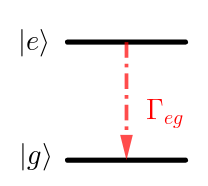

Atomic and Optical Physics I, 05 Resonance V and Atoms I
Table of Contents
1. Information
2. Need for Density Operator
Schrodinger Equations deals only with pure states, can not describe loss and coherence.
Exception:
can be still use a Hamiltonian with complex eigenvalues. 因为这种情况下我们只关 心 \(|e\rangle, |g\rangle\) 两个态, 不关心 decay 到的态
\begin{align} E_g \rightarrow E_g + \frac{\mathrm{i}\Gamma_{gl}}{2} \end{align}However, many other proceesses require density matrix, such as spontaneous emission  因为此时我们对两个态都关心.
3. Density Operator
把态 \(|\psi\rangle\) 在基底下展开
\begin{align} |\psi(t)\rangle = \sum_n c_n(t) |\psi_n\rangle \end{align}Operator \(A\) 的期望为
\begin{align} \langle A\rangle_t =& \langle \psi(t) | A | \psi(t)\rangle = \sum_{m, n} c_m(t) c_n^{*}(t)A_{nm} \\ =& \sum_{m, n} \rho_{mn}(t) A_{nm} = \mathrm{Tr}(\rho(t) A) \end{align}where
\begin{align} A_{nm} =& \langle \psi_n |A|\psi_m\rangle \\ \rho_{mn} =& c_m(t) c_n^{*}(t) \\ \rho(t) =& |\psi(t)\rangle \langle\psi(t)| \end{align}\(\rho_{mn}\) : populations, \(\rho_{mm}\) : coherence.
Now, 考虑一个混合态 \(\sum_i P_i|\psi_i(t)\rangle = \sum_i\sum_n P_ic_n^i(t)|\psi_n\rangle\) , 相应的
\begin{align} \rho(t) = \sum_i P_i |\psi_i(t)\rangle \langle\psi_i(t)| \end{align}此时 \(A\) 的期望为还可以写为
\begin{align} \langle A\rangle_t = \mathrm{Tr}(\rho(t) A) \end{align}不过此时 \(\langle A\rangle\) 有 two averages: quantum average, ensemble average with \(P_i\) . The advantage of the density matrix formalism is that two kinds of averages can be done simultaneously in a very compact formalism!
Apply Schrodinger equation to each \(\psi_i\) , we get
\begin{align} \mathrm{i}\hbar \dot{\rho} = [H, \rho] \end{align}Properties
\begin{align} \mathrm{Tr} \rho =& \sum_iP_i = 1 \\ \mathrm{Tr} \rho^2 =& \sum_i P_i^2 \le 1 \\ =& 1 \quad \mathrm{for\,pure\,state} \end{align}So far, I've presented you the density matrix just as an elgent way of integrating the two averages into one formalism. And in essence, this is what it is. But you can now also use the density if the wholes system undergoes a time evolution, which is no longer unitary, no longer described by Hermition operator. Because you're interested in the time evolution or a small system, which is a part of a bigger system. The bigger system is always described by unitary time evolution, but smaller system is usually not described by unitary time evolution. And that's when the density matrix becomes crucial.
Next: use \(\rho\) for no-unitary time evolution. Often open systems (small system, but open to a bigger system. Like we are interested to describe an atom, but the atom can spontaneously emit photons into other parts of Hilbert space, and we're not interested in thoses other parts.) Where we limit our description to a small part of larger system. An atom interacting with all the modes of the electromagnetic field, but we are simply want to describe the atom. And then, we cannot use a wave function anymore. We have to use the density matrix.
4. Density Matrix for Arbitrary Two-level System
General Hamiltonian for two-level System
\begin{align} H = \frac{\hbar}{2}\left(\bar{\omega} I + \omega_{1}\sigma_{x} + \omega_2\sigma_y + \omega_3\sigma_z \right) \end{align}By appropriately shifting what is the zero point of energy, we can set \(\bar{\omega} = 0\)
\begin{align} H = \frac{\hbar}{2}\left(\omega_{1}\sigma_{x} + \omega_2\sigma_y + \omega_3\sigma_z \right) = \frac{\hbar}{2} \vec{\omega} \cdot\vec{\sigma} \end{align}General density matrix
\begin{align} \rho = \frac{1}{2} \left( r_0 I + r_1\sigma_x + r_2\sigma_y +r_3\sigma_z \right) \end{align}Of course, this time we cannot throw away the unity matrix, because otherwise the density matrix would have no trace. 但是 \(\mathrm{Tr}\rho = 1\) , 所以 \(r_0 = 1\)
\begin{align} \rho = \frac{1}{2} \left( I + \vec{r}\cdot\vec{\sigma} \right) \end{align}\(\vec{r}\) is called Bloch Vector . Use equation of motion \(\mathrm{i}\hbar\dot{\rho} = [H, \rho]\) we get (checked! Exercise)
\begin{align} \dot{\vec{r}} = \vec{\omega}\times \vec{r} \end{align}We see, the length of \(\vec{r}\) is a constant. It is a precession! We generalizes our previous result \(\dot{\vec{S}} = \vec{\omega} \times \vec{S}\) .
Feynman, R. P., Vernon, F. L. & Hellwarth, R. W. Geometrical Representation of the Schrödinger Equation for Solving Maser Problems. Journal of Applied Physics 28, 49–52 (1957).
Theory by Feymman, Vernon and Hellwarth:
The time evolution of the density matrix for the most general two-level system is isomorphic to the behavior of classical moment in a suitable time dependent magnetic field.
Note: Pure state will stay pure forever. Because
\begin{align} \mathrm{Tr}\rho^2 = \frac{1}{2}(r_0^2 + |\vec{r}|^2) = \mathrm{const.} \end{align}Does not describe loss of coherence.
5. Bloch Equation (1946), Relaxation
Everything has to come to thermal equilibrium.
The density matrix of thermal equilibrium, which has only diagonal matrix elements, the populations follow the Boltzmann factor
\begin{align} \rho^T = \frac{1}{z} e^{-\frac{H}{k_B T}} \end{align}Relaxation will restore \(\rho\) to \(\rho^T\) .
Phenomenological treatment of damping:
\begin{align} \dot{\rho} = \frac{1}{\mathrm{i}\hbar} [H, \rho] - \frac{\rho - \rho^T}{T_e} \end{align}where \(T_e\) is equilibrium time. The second term will damp the density matrix to the thermal equilibrium density.
In many cases, there are two relation times
- \(T_1\) : population different energy decay time, \(\dot{r}_z = (\vec{\omega}\times \vec{r})_z - (r_z - r_z^T)/T_1\) .
- \(T_2\) : coherence, dephasing time, \(r_1, r_2\) .
whem quantum system lose its memory of phase, the \(r_1, r_2\) components of the Bloch vector goes to \(0\) . \(r_1, r_2\) only nonzero if you have two states populated with a well-defined relative phase.
6. Atoms Sayllabus
Kleppner, D. The Yin and Yang of Hydrogen. Physics Today 52, 11–13 (1999).
First: electronic structure:
- 1 e, H
- 2 e, He
Then:
- Fine structure
- Lamb shift
- HFS: nucleus
- External field, B, E, EM field.
Import physics system
- Harmonic oscillator
- Two-level system
- Hydrogen
7. Hydrogen atoms
Rydberg formula follows from the simple Bohr model, also from Schrodinger equation
\begin{align} E_n = - \left(\frac{1}{2}\frac{me^4}{\hbar^2}\frac{M}{M+m} \right)\frac{1}{n^2} \end{align}where Rydberg constant \(R_{\infty} = \frac{1}{2}\frac{me^4}{\hbar^2}\) which describes the spectrum of a hydrogen atom where the nucleus has infinite mass, reduced mass factor \(\frac{M}{M + m}\) . Rydberg constant with reduced mass factor call \(R_{H}\) , which determines the spectrum of hydrogen.
小结:
\begin{align} E_n = - \frac{R}{n^2} \end{align}其中 \(R = \frac{\mu e^4}{2\hbar^2}\) 有时也记作 \(R_H = \frac{\mu e^4}{2\hbar^2}\), 其中 \(\mu\) 是 reduced mass \(\mu = \frac{m M}{m + M}\) . 如果 \(M\to \infty\) 那么 \(R_{\infty} = \frac{me^4}{2\hbar^2}\)
Solution of Schrodinger Equation
\begin{align} \psi_{nlm} = R_nl(r)Y_{lm}(\theta, \phi) \end{align}There are a number of noteworthy results.
\begin{align} E_n = - \frac{R_H}{n^2} \end{align}Intuition for the size of the hydrogen atom, the size of hydrogen-like atoms. The radius or the expectation value of the position of the electron
\begin{align} \langle r_{nl}\rangle = n^2 a_0 \left\{1 + \frac{1}{2} \left[ 1 - \frac{l(l + 1)}{n^{2}} \right] \right\} \end{align}It's important to distinguish between the expectation value for the radius and the inverse radius
\begin{align} \langle \frac{1}{r_{nl}} \rangle = \frac{1}{n^2 a_0} \end{align}where \(a_0 = \frac{\hbar^2}{\mu e^2}\)
Virial Theorem
\begin{align} \langle T \rangle = \frac{1}{2} \langle \vec{r} \cdot \nabla V(\vec{r}) \rangle \end{align}for \(V = r^n\) , \(2\langle T \rangle = n\langle V\rangle\)
\(\langle \frac{1}{r_{nl}} \rangle\) 的形式这样简单, 可以从 virial theorem 来理解. 总的能量的 形式 \(E_n\sim \frac{1}{n^2}\) , 库仑势能 \(\langle V\rangle \sim \langle \frac{1}{r}\rangle\) , 而根据 virial theorm 有 \(\langle T\rangle = -\frac{1}{2}\langle V\rangle\) , 因此 \(\langle \frac{1}{r}\rangle \sim \frac{1}{n^2}\) . 精确来讲
\begin{align} & -\frac{R_H}{n^2} = E_n = \langle T\rangle + \langle V\rangle = \frac{1}{2}\langle V\rangle = - \frac{1}{2}e^2\langle \frac{1}{r}\rangle \\ \Rightarrow& \langle \frac{1}{r_{nl}} \rangle = \frac{1}{n^2 a_0} \end{align}In CGS units
\begin{align} R_H = \frac{1}{2} \frac{e^2}{a_0} \end{align}is one half of the Coulomb energy at the Bohr radius, which is called one Hartree \(\frac{\mu e^4}{\hbar^2} = \frac{e^2}{a_0}\)
The fundamental energy of the hydrogen atom, the fundamental unit of energy is whatever energy you can construct using the electron mass, the electron charge and \(\hbar\) , and what you get is \(1\) Hartree. If you ever wondered why the Rydberg is \(1/2\) Hartree, what happens is in the ground state of hydrogen, you have \(1\) Hartree worth of Coulomb energy. But then because of the Virial theorem, you have \(-1/2\) of it as kinetic energy, and therefore, the binding energy in the \(n=1\) ground state, which is \(1\) Rydberg, is \(1/2\) Hartree. So this factor of \(1/2\) of the Virial theorem is responsible for this factor of \(2\) for those two energies.
In SI units: \(e^2 \to \frac{e^2}{4\pi\epsilon_0}\)
8. Hydrogen-like atoms
How do things depend on the nuclear charge \(Z\) ? Because of the stronger Coulomb attraction, all the length scales are divided by \(Z\) . So everything is smaller by factor of \(Z\) . So what does that now imply for the energy? Well, you have a Coulomb field which is \(Z\) times stronger, but you probe it now at a \(Z\) times smaller radius. So therefore, the energies scale with \(Z^2\)
\begin{align} E_n = - \frac{R_H Z^2}{n^2} \end{align}If you have a hydrogen-like atom, and the electron is in a state with principal quantum number, no angular momentum. The probability for the electron to be at the nucleus
\begin{align} |\psi_{n00}(0)|^2 \end{align}This will be very important later on, when we discuss hyperfine structure because what is responsible is the fact that the electron can overlap with nucleus. So this factor will appear in our discussion of hyperfine structure, and what I want to ask you is how does this quantity depend on the principal quantum number \(n\) and on \(Z\) ?
- A. \(\frac{Z^3}{a_0^3 n^6}\)
- B. \(\frac{Z}{a_0^3 n^2}\)
- C. \(\frac{Z^3}{a_0^3 n^3}\)
- D. \(\frac{Z^2}{a_0 n ^2}\)
The exact answer is \(|\psi_{n00}(0)|^2 = \frac{Z^3}{\pi a_0^3 n^3}\)
Z scaling: \(e^2 \to Ze^2\) , \(a_0 = \frac{\hbar^2}{m e^2}\to \frac{a_0}{Z}\) . So if all length scales go as \(\frac{1}{Z}\) . So the density goes \(Z^3\)
When we talk about the wave functions with principal quantum number \(n\) , there are two length scale. \(\langle \frac{1}{r_{nl}}\rangle = \frac{Z}{a_0 n^2}\) scales with \(n^2\) BUT, the characteristic length in the exponential decay of wave function is \(\frac{n a_0}{Z}\) scales with \(n\) .
That is important for quantum defect and hyperfine structure.
For \(l\neq 0\) , \(\psi\propto r^l\) , \(|\psi|\propto r^{2l}\) . For large \(n\) , \(|\psi|\propto r^{2l}\frac{1}{n^3}\) .
9. Reference
- Feynman, R. P., Vernon, F. L. & Hellwarth, R. W. Geometrical Representation of the Schrödinger Equation for Solving Maser Problems. Journal of Applied Physics 28, 49–52 (1957).
- Kleppner, D. The Yin and Yang of Hydrogen. Physics Today 52, 11–13 (1999).
- Friedrich, H. Theoretical Atomic Physics. (Springer International Publishing, 2017). Chap 2.1.1 The Hydrogen Atom
- wikipedia: Virial theorem
- wikipedia: Hartree